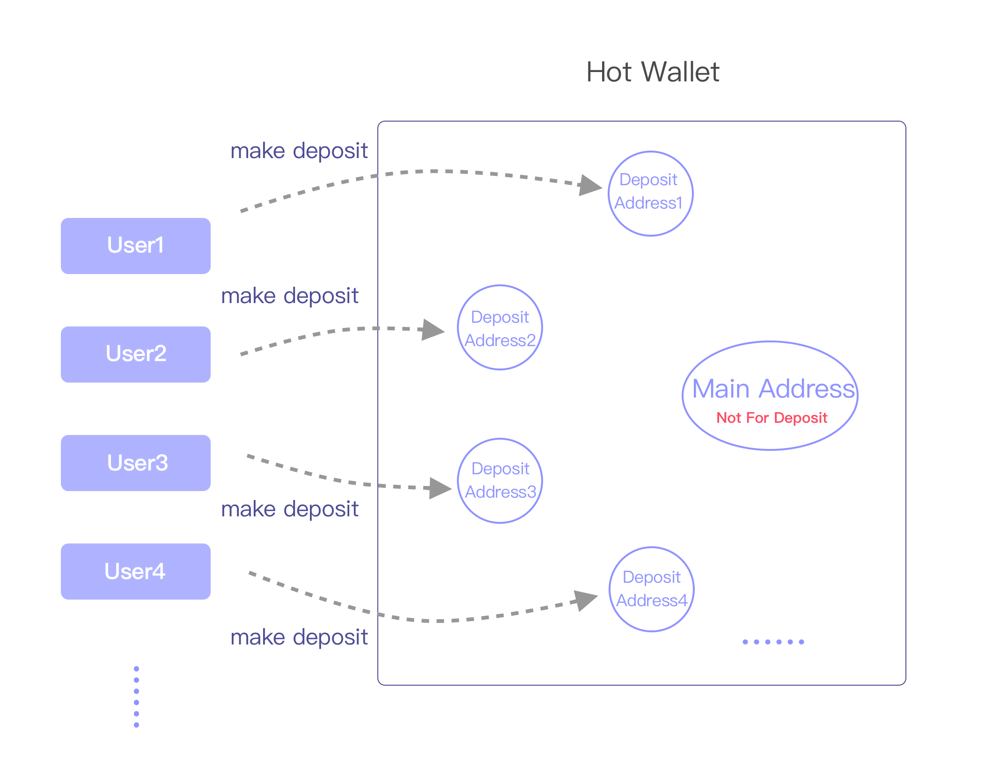
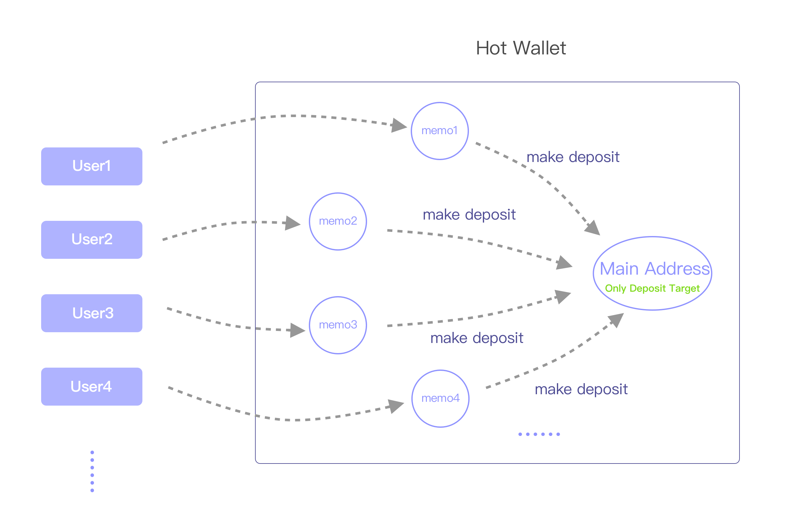

When client requests a new deposit address, it can be one of the following four modes: "auto", "deposit", "deposit_memo", "safe_deposit". Depending on each blockchain's own characteristics, each has its default mode , either "deposit" or "deposit_memo".
| supported address mode | blockchain |
|---|---|
| deposit | Bitcoin、Ethereum、ERC20、Omni(USDT)、Litecoin、Neo、VeChain、Qtum、Bitcoin Cash、Zcash、TomoChain、Tron、Kusama、Polkadot、Tezos、QLink、Algorand、Harmony |
| deposit_memo | EOS、Ripple、Stellar、Cybex、EveriToken |
| both | Cosmos、IRISnet、ChainX |
| safe_deposit | Only support Bitcoin, Ethereum for now |
Note：If client requests "auto", deposit addresses will be generated under the mode shown above (For Cosmos, IRISnet and ChainX, "auto" equals to "deposit_memo" in V1 API and to "deposit" in V2 API). If the requested mode is not supported then API will reject the request. For example, request "deposit" mode for EOS or request "deposit_memo" mode for Bitcoin.
"Deposit" Mode
Client should generate a new deposit address (call Jadepool Hub API) for each user. The correspondence between the deposit address and the user’s account should be stored in the client's database. When Jadepool notifies client that the deposit address has received a transfer, it means that the balance of the corresponding user’s account should be increased. Jadepool is a pure wallet that do not store any user information. For security concerns, Jadepool will gather or break up the assets in the pool. So the balance of the user’s deposit address on the blockchain does not represent the user’s balance in the client's platform.
Deposit" Mode illustration:

"Deposit_memo" Mode
Each hot wallet only has one deposit account/address. All users will be given the same deposit account/address but a different memo (or tag). Memo must be included in the deposit transaction and must be exactly the same.
"Deposit_memo" Mode illustration:

AML Mode
The system will not automatically transfer the assets after the address is deposited. The front-end system needs to conduct AML review of the deposit and request the Jadepool Hub system by API to do the transfer. If the review fails, the deposited assets can stay in the deposit address without any processing, or the front-end system can request a full refund to a custom address.